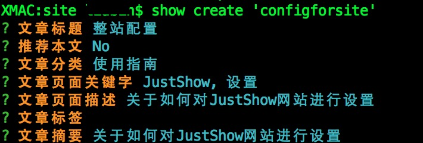

文章管理
对文章进行增、删、改等操作。JustShow使用Markdown格式来保存文章内容，并使用marked.js来渲染成HTML。
文章对应的文件都保存在markdown\articles目录中，每篇文章都会包含一个md文件和json文件，其中json文件保存了文章分类、关键字、描述、摘要等额外的信息。
添加文章

删除文章
TODO。
修改文章
TODO。
关于在文章中使用附件
JustShow没有集成附件管理功能，请手动将附件放到网站的builds\uploads目录下，并且使用相对路径来访问附件。
添加图片

添加下载
[点此下载附件](../uploads/test.zip)